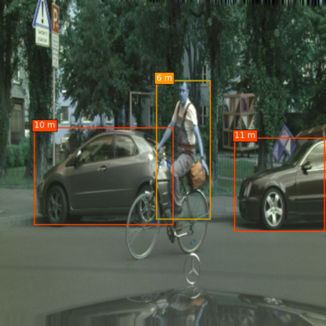

Neural Networks have been trained to generate monocular disparity. If it is possible to generate disparity using monocular images, then it must be possible to combine distance with some of the existing Detection Network.
A network that can only identify obstacles in the current scene but also predict its depth, in real time can have enormous applications in ADAS systems. It frees developers from the constraints that are associated with computing distance of an object when using Monocular Camera and also reduces the system cost, as now only one camera is required.
This thought led to this expeiment wherein SSD network was modified to predict the distance of an object. Now, every output layer was modified to predict not only the shape offsets and the class confidence but also the depth. The loss function remained the same, except for the Scale-Invariant Loss being added for the distance. The model was able to fit its training dataset. SSD's architecture was modified to work on a different resolution and also to obtain the results in real-time. Some of the results obtained over the CityScape Dateset are shared below.
However, some instances were observed wherein the network predicted highly deviant values. Now, this problem might be solved by using more data to train the network and making some other essential changes to the network, it cannot be guaranteed that such behaviour will never be observed. Also, it is difficult to cap the maximum error to a certain distance or to report the maximum error that will be observed for an object at a known distance. Hence, making it difficult to deploy this system in ADAS systems.